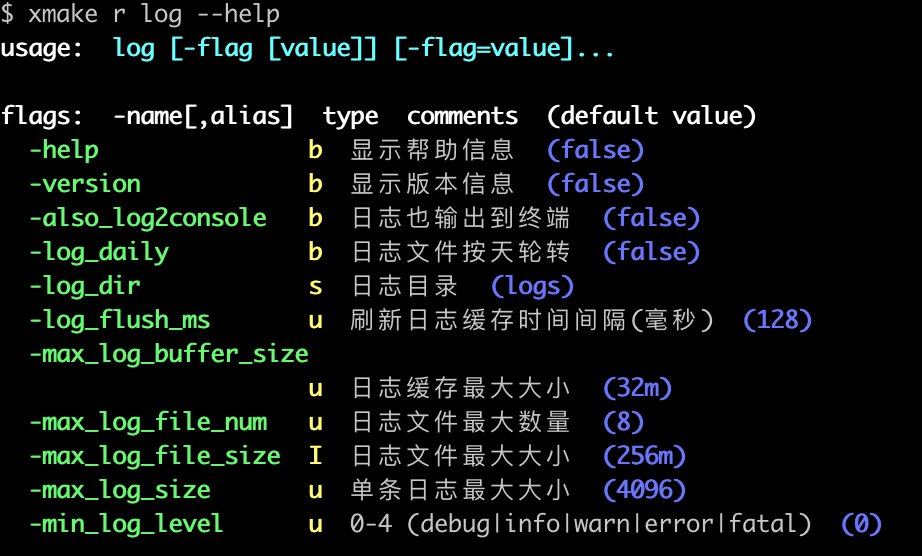

#FAQ
#如何修改配置项的值？
coost 用 flag 定义配置项，可以通过命令行参数或配置文件修改。
命令行中：
-co_sched_num=2 -min_log_level 1
配置文件中：
co_sched_num = 2
min_log_level = 1
用户不需要手写配置文件，可执行 ./exe -mkconf 生成配置文件。
另外也可以调用 flag::set_value 修改 flag 默认值：
int main(int argc, char** argv) {
flag::set_value("co_sched_num", "2");
flag::set_value("version", "v3.1.4");
flag::parse(argc, argv);
return 0;
}
此处flag::set_value在flag::parse之前，这样用户仍然能够通过命令行参数、配置文件修改 flag 值。
#程序启动时如何指定配置文件？
命令行参数中第一个非 flag 参数(.conf 结尾)是配置文件：
./xx xx.conf
在代码中可以用 flag::set_config_path 设置默认配置路径，设置后，命令行中可以不传配置路径：
int main(int argc, char** argv) {
flag::set_config_path("xx.conf");
flag::parse(argc, argv);
return 0;
}
set_config_path必须在parse前调用。
#如何使用 flag 别名？
定义 flag 时，最后一个参数可指定最多一个别名：
DEF_bool(debug, false, "comment here"); // 无别名
DEF_bool(debug, false, "comment here", d); // 别名 d
用户无法修改 flag 定义时，可以调用 flag::alias 设置别名，如 coost 内部定义的 flag version，用户可以设置别名如下：
int main(int argc, char** argv) {
flag::alias("version", "v");
flag::parse(argc, argv);
return 0;
}
flag::alias须在flag::parse前调用。
#如何配置日志模块？
coost 日志组件使用 flag 定义配置项，执行 ./exe --help 可以看到 flag 信息。
如在 coost 根目录执行如下命令：
xmake b log
xmake r log --help
可以看到如下 flag 信息：

可以通过命令行或配置文件修改 flag 的值，定制日志行为。
#如何设置 JSON 中的小数位数？
json::any::str() 方法中参数 mdp，可指定最大有效小数位数(默认是 16):
co::Json x = {
{"a", 3.14159},
{"b", 1.2345e-5},
};
co::print(x.str()); // {"a":3.14159,"b":1.2345e-5}
co::print(x.str(2)); // {"a":3.14,"b":1.23e-5}
#如何实现 JSON 与结构体互转？
coost 提供代码生成工具 gen，可根据 proto 文件自动生成 JSON 与结构体互转的代码，具体用法见 j2s。
#频繁创建、销毁线程导致内存泄露？
频繁创建、销毁线程是设计上的错误。
coost 内部使用了 TLS (线程局部存储)，频繁创建、销毁线程，一些 TLS 资源在线程退出时不会自动销毁，从而导致内存泄露。
尽管 C++ 标准中的 thread_local，可以保证 TLS 对象在线程退出时自动析构，但是在线程退出时析构 TLS 对象并不总是正确的行为，如基于 TLS 实现的内存分配器，一个线程退出时，该线程中分配的内存，可能还在被其他线程使用，这个时候释放该线程 TLS 资源，可能会导致程序崩溃。
#如何设置协程调度线程的数量？
可以通过 flag co_sched_num 配置调度器数量，最大不能超过系统 CPU 核数。
#创建协程的数量是否有限制？
coost v4.0.0 对协程数量限制如下：
- 64 位系统，单线程最多 16M (1600万以上) 协程。
- 32 位系统，单线程最多 1M 协程。
- 实际允许的协程数为：16M(1M) * 调度线程数量。
实际应用中受限于系统内存，一般不会超过上述限制。
#协程是否会出现栈溢出？
coost 采用共享栈设计，协程栈默认大小为 1M，足够大，一般不会出现栈溢出。如果 1M 不够，可以通过 flag co_stack_size 调整。
#协程共享栈在使用上有哪些限制？
协程中不能通过指针或引用访问其他协程栈上的对象(局部变量)，栈是共享的，协程栈上数据可能被其他协程覆盖。
lambda 需要按值捕获协程栈上的对象，不能按引用捕获。
#协程中怎么使用三方网络库？
coost v4.0.0 移除了 hook 功能，不能直接在协程中使用三方网络库。可以参考 src/co/sock.cc 中代码，将三方网络库协程化。
#主线程可以设置成协程调度线程吗？
此功能会增加协程代码复杂度，不利于维护，coost v4.0.0 已移除此功能。